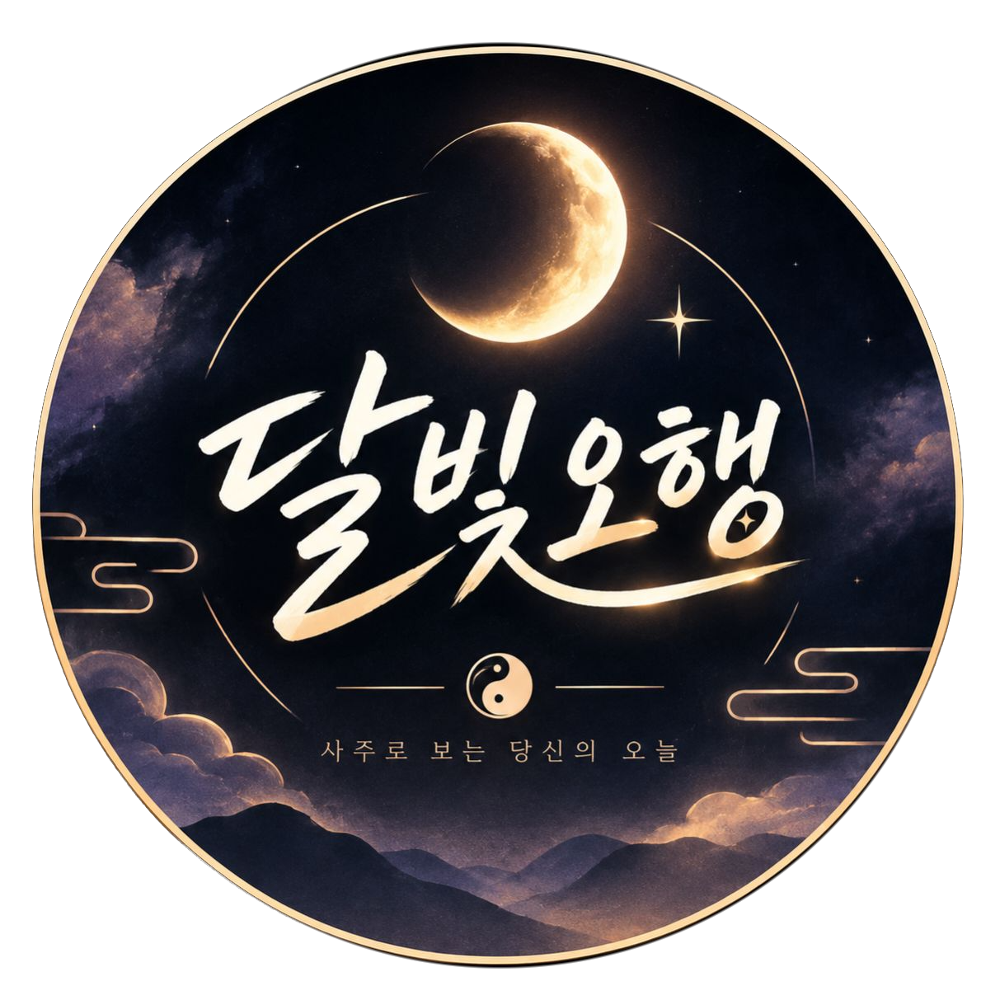
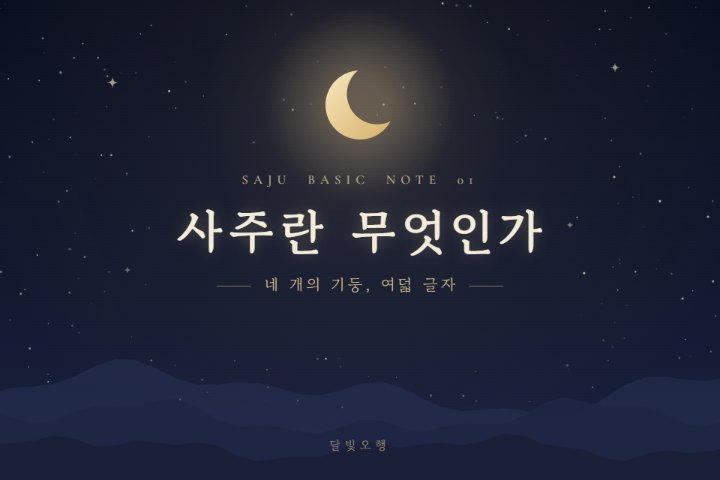
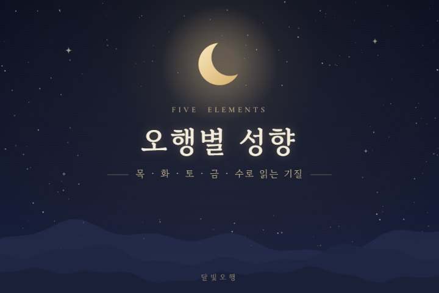
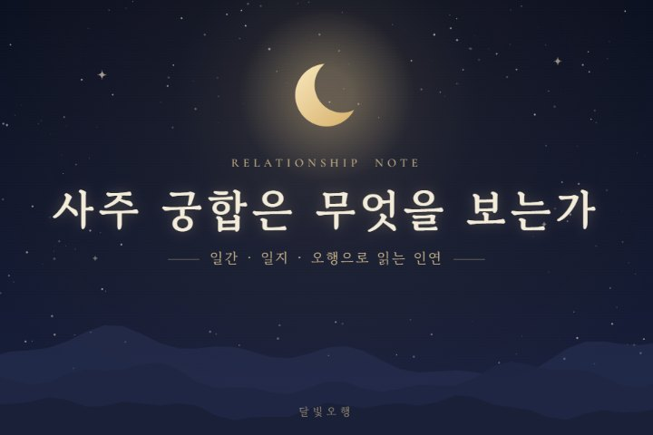
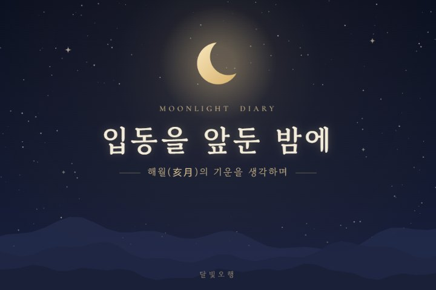

Moonlight Saju Note
달빛오행
사주로 읽는 오늘의 나
木火土金水
어렵게만 느껴지던 사주와 오행,
명리학 이론에 근거해 달빛처럼 은은하고 쉽게 풀어드립니다.
SCROLL ↓
About
달빛오행을 소개합니다

달빛은 어둠을 걷어내지 않지만,
길을 분간할 만큼은 비춰줍니다.
사주 역시 삶의 정답을 대신 정해주는 것이 아니라, 지금 내가 어디쯤 서 있는지를 비춰주는 도구라고 생각합니다.
달빛오행은 사주명리학을 기반으로 타고난 기질과 운의 흐름을 차분하게 풀어 쓰는 공간입니다.
原則 一
이론에 근거합니다
출처가 불분명한 속설이나 과장된 표현은 지양하고, 명리학의 기본 이론으로 설명합니다.
原則 二
단정하지 않습니다
사주는 경향성을 보여줄 뿐, 길흉을 확정하지 않는다는 관점을 지킵니다.
原則 三
불안을 조장하지 않습니다
살(煞)과 흉운도 낙인이 아니라, 이해하고 대비할 수 있는 정보로 다룹니다.
Latest Notes
달빛오행의 글
블로그에서 전문을 읽어보실 수 있습니다.

사주 입문
사주(四柱)란 무엇인가 | 네 기둥과 여덟 글자로 보는 명리학의 기본 구조

오행과 성향
오행(五行)별 성향 | 목·화·토·금·수로 읽는 기질의 차이
일간별 성향 이야기
일간(日干) 10가지 성향 총정리 | 갑목부터 계수까지
띠별·월별 운세
2026년 11월 운세 | 기해월(己亥月)의 흐름과 띠별로 짚어볼 점

궁합·인연 이야기
사주 궁합은 무엇을 보는가 | 일간·일지·오행으로 읽는 인연의 구조
사주 궁금증 풀이
사주 상담 전 자주 묻는 질문 5가지

달빛 일기
입동(立冬)을 앞둔 밤에 | 해월(亥月)의 기운을 생각하며
달빛오행 소개
달빛오행을 소개합니다 | 블로그 운영 방향과 카테고리 안내
사주는 운명을 단정하는 판결문이 아니라
타고난 기질과 흐름을 읽는 지도입니다.